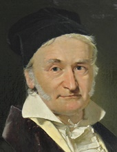

Słynni matematycy Oto kilka przykładów słynnych matematyków, którzy zasłyneli na świecie ze swojej niesłychanej mądrości matematycznej. Piere de Fermat Kartezjusz Leonhard Euler Bernhard Riemann Fibonacci  Carl Friedrich Gauss Wszystkie zdjęcia pochodzą z domeny publicznej